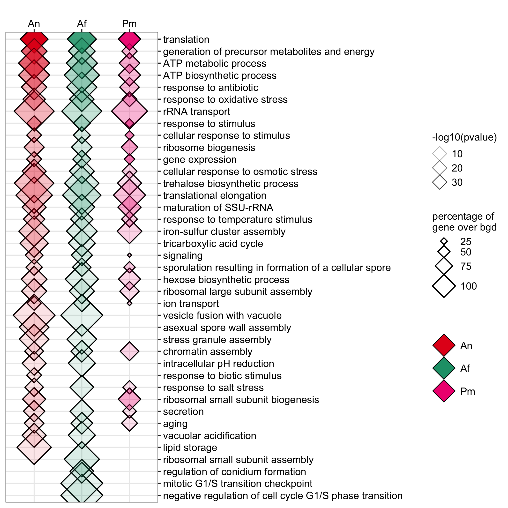
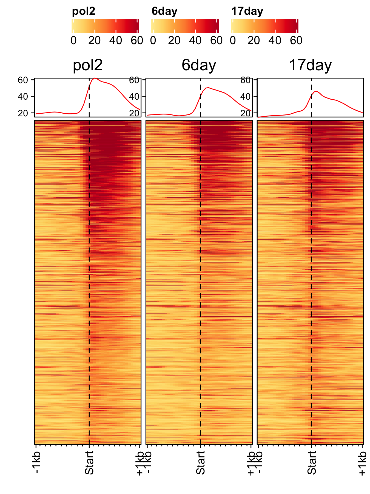
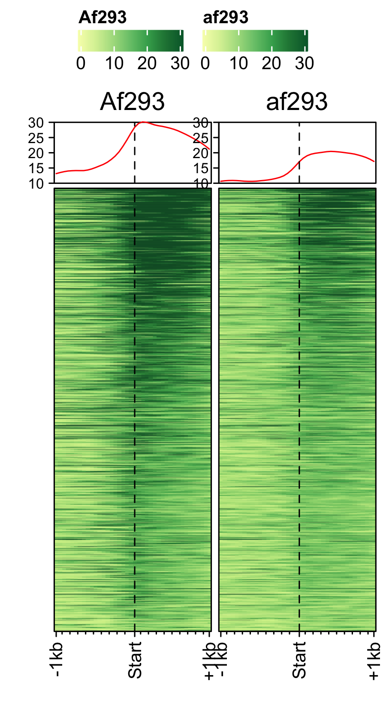
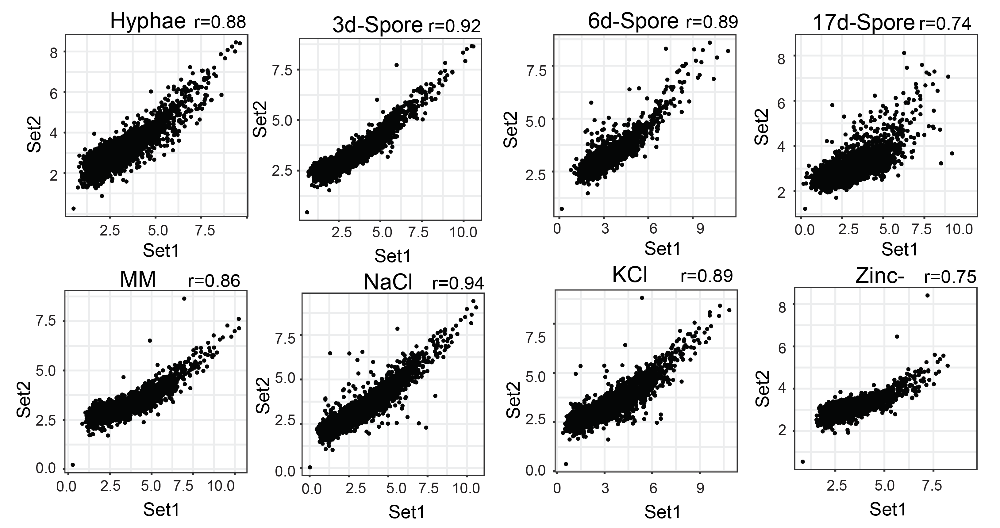
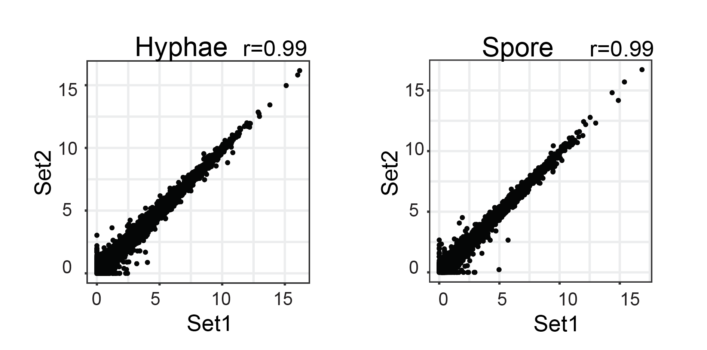
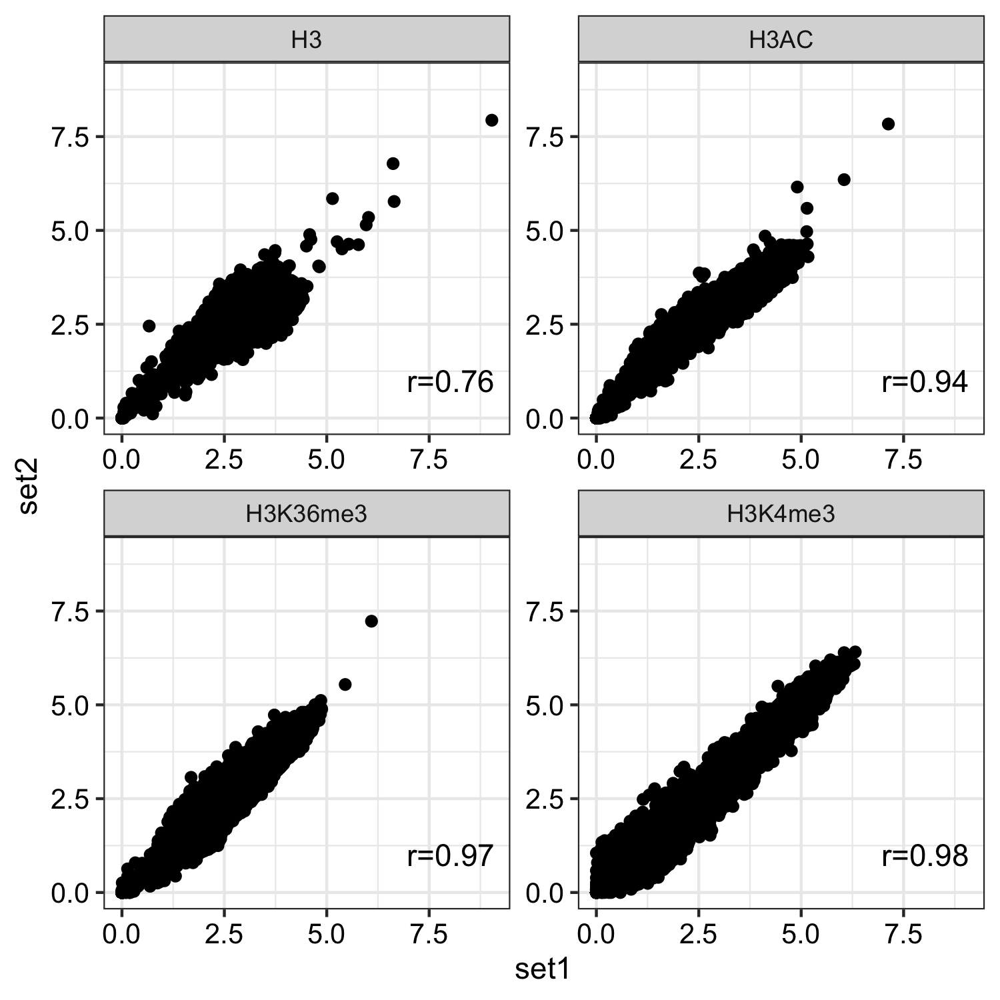
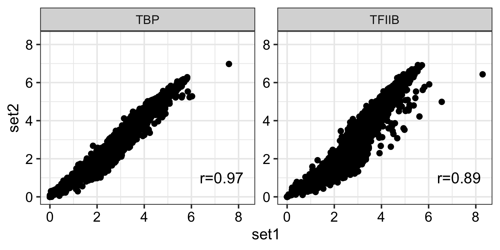

Koon Ho Wong’s lab, University of Macau
Transcription in spores
Profiles of pre-initiation complex (PIC) factors
Load feature file and data (bw files stored as GRanges object).
# genome feature file sql_lite_dir <- system.file("extdata","sqllite" , package = "FungalSporeAnalysis") sql_files <- list.files(path = sql_lite_dir , full.names = T) names(sql_files) <- basename(sql_files) # gene lists with expression gene_list_dir <- system.file("extdata","genesets" , package = "FungalSporeAnalysis") gene_list_files <- list.files(path = gene_list_dir , full.names = T) names(gene_list_files) <- basename(gene_list_files)
PIC profiles ie. RNAP-II, TBP and TFII-B in spores of A. nidulans generated using genelist_specific_profileplot function.
gene_list <- readr::read_delim(gene_list_files["an_spore_pol2.txt" ], delim="\t", col_names = FALSE) feature_txDb <- AnnotationDbi::loadDb(sql_files["an_feature_file_s10_m04_r07.sqlite"]) # RNAP-II pol2_veA_wt_spore <- rtracklayer::import.bw("pol2_veA_wt_spore_mix22_CACAGTTGGT_normalized_repeat.bw") genelist_specific_profileplot(feature_txDb =feature_txDb,bw_files = "pol2_veA_wt_spore", genelist=gene_list, output_name="An_Spore_Pol2", ymin=3,max_key = 10, min_key = 0, ymax = 5.5, palette = "white_red") # TBP veA_wt_TBP_spore <- rtracklayer::import.bw("TBP_veA_wt_spore_mix22_CAGTTGGT_normalized_repeat.bw") genelist_specific_profileplot(feature_txDb =feature_txDb,bw_files = "veA_wt_TBP_spore", genelist=gene_list,max_key=4.5,min_key = 0, output_name="An_Spore_TBP", ymin=3, palette = "white_green", ymax = 5.5) # TFII-B TFIIB_veA_wt_spore <- rtracklayer::import.bw("TFIIB_veA_wt_spore_mix22_CAGTTGGT_normalized_repeat.bw") genelist_specific_profileplot(feature_txDb =feature_txDb,bw_files = "TFIIB_veA_wt_spore", genelist=gene_list,max_key=5,min_key = 1, output_name="An_Spore_TFIIB", ymin=3, palette = "white_blue", ymax = 5.5)
Percentile rank of RNAP-II, mRNA-levels and H3
Distribution of actively transcrbing genes ranked by RNAP-II values in data RNAP-II and RNASeq data.
genelist <- readr::read_delim(gene_list_files["an_spore_pol2_for_percentilelineplot.txt"],delim="\t", col_names=FALSE) # RNAP-II pol2_veA_wt_spore <- rtracklayer::import.bw("pol2_veA_wt_spore_mix22_CACAGTTGGT_normalized_repeat.bw") lineplot_for_bw(feature_txDb, genelist =genelist,bw_file="pol2_veA_wt_spore", output_name = "pol2_veA_wt_spore") # mRNA levels An_d3_spore_mRNA_hisat2 <- rtracklayer::import("d3_spore_nidulans_1_hisat2_gencov_normalized.bedgraph") lineplot_for_bw(feature_txDb, genelist=genelist, bw_file="An_d3_spore_mRNA_hisat2", output_name = "An_d3_spore_mRNA_hisat2", tss=FALSE)
Distribution of actively transcrbing genes ranked by RNAP-II values and control genes(non-transcribing genes) in H3 data.
# Histone H3 occupancy genelist <- readr::read_delim(gene_list_files["an_spore_pol2_for_H3percentile.txt"],delim="\t", col_names=FALSE) H3_an_spore <- rtracklayer::import("an_spore_H3_AGAACACC_CL1019Mix_normalized.bw") lineplot_for_bw(feature_txDb, genelist =genelist,bw_file="H3_an_spore", output_name = "H3_an_spore", expression_value = FALSE)
Histone occupancy
Different histone mark’s occupancy at actively transcribing genes in spore. Here, histone mark signals are normalized to H3. Plots are generated using profiles_normalized_by_control function. First, load RNAP-II signals to rank the histone marks and a genelist of control genes which are lowly transcribing or non-transcribing genes. And then generate normalized profiles of H3Ac, H3K4me3 and H3K36me3 marks.
genelist_1 <- readr::read_delim(gene_list_files["an_spore_pol2.txt"], delim="\t", col_names = FALSE) genelist_2 <- readr::read_delim(gene_list_files["an_spore_pol2_controlgenes.txt"], delim="\t", col_names = FALSE) # H3Ac occupancy H3AC_veA_wt_spore <- rtracklayer::import("An_3d_spore_H3Ac_CGCATTAA_mix33_fang_normalized.bw") profiles_normalized_by_control(feature_txDb = feature_txDb,bw_test = "H3AC_veA_wt_spore", bw_control = "H3_an_spore",genelist_1 = genelist_1,genelist_2 = genelist_2, ymax = 3.8,ymin=0.5, output_name = "H3Ac_veA_wt_spore") # H3K4me3 H3K4me3_veA_wt_spore <- rtracklayer::import("veA_wt_spore_H3K36me3_GCGTTTCGA_CL_ChIPmix22_normalized.bw") profiles_normalized_by_control(feature_txDb = feature_txDb,bw_test = "H3K4me3_veA_wt_spore", bw_control = "H3_an_spore",genelist_1 = genelist_1,genelist_2 = genelist_2, ymax = 6,ymin=0.3, output_name = "H3K4me3_veA_wt_spore") # H3K36me3 H3K36me3_veA_wt_spore <- rtracklayer::import("veA_wt_spore_H3K4me3_CGGACGTGG_CL_ChIPmix22_normalized.bw") profiles_normalized_by_control(feature_txDb = feature_txDb,bw_test = "H3K36me3_veA_wt_spore", bw_control = "H3_an_spore",genelist_1 = genelist_1,genelist_2 = genelist_2, ymax = 2,ymin=0.5, output_name = "H3K36me3_veA_wt_spore")

Initiation and RNAP-III factors
# tRNA feature file feature_txDb <- AnnotationDbi::loadDb(sql_lite_file["an_feature_file_s10_m04_r07_tRNA.sqlite"]) # tRNA signal file gene_list <- readr::read_delim(gene_list_files["an_spore_tRNA.txt"], delim="\t", col_names = FALSE) # TFIII-B AN3116_HA_spore <- rtracklayer::import("AN3116_HA_spore_GTGGGATAT_ChIPMix49_normalized.bw") genelist_specific_profileplot(feature_txDb = feature_txDb, genelist = gene_list, bw_files = "AN3116_HA_spore",ymax = 280, ymin = 10, max_key = 59, min_key = 0, output_name = "AN3116_HA_spore", log2 = FALSE, palette = "cream_green") # TBP veA_wt_TBP_spore <- rtracklayer::import("veA_wt_TBP_spore_GATCAG_CL_ChIPmix22_normalized.bw") genelist_specific_profileplot(feature_txDb = feature_txDb, genelist = gene_list, bw_files = "veA_wt_TBP_spore",ymax = 46, ymin = 8, max_key = 59, min_key = 0, output_name = "TBP_veA_wt_spore_tRNA", log2 = FALSE, palette = "cream_green") # TFIII-C AN7997_HA_spore <- rtracklayer::import("AN7997_HA_spore_ACGTAGCTCT_ChIPMix49_normalized.bw") genelist_specific_profileplot(feature_txDb = feature_txDb, genelist = gene_list, bw_files = "AN7997_HA_spore",ymax = 26, ymin = 8, max_key = 59, min_key = 0, output_name = "AN7997_HA_spore", log2 = FALSE, palette = "cream_green") # Rpo31 AN10316_HA_spore <- rtracklayer::import("AN10316_HA_spore_TGATCCGAT_ChIPMix49_normalized.bw") genelist_specific_profileplot(feature_txDb = feature_txDb, genelist = gene_list, bw_files = "AN10316_HA_spore",ymax = 270, ymin = 10, max_key = 150, min_key = 0, output_name = "AN10316_HA_spore", log2 = FALSE, palette = "cream_brown") # Rpc40 AN2415_HA_spore <- rtracklayer::import("AN2415_HA_spore_GCAAGTAGAT_ChIPMix49_normalized.bw") genelist_specific_profileplot(feature_txDb = feature_txDb, genelist = gene_list, bw_files = "AN2415_HA_spore",ymax = 180, ymin = 10, max_key = 150, min_key = 0, output_name = "AN2415_HA_spore", log2 = FALSE, palette = "cream_brown") # Rpc11 AN4219_myc_spore <- rtracklayer::import("AN4219_myc_spore_CGAACTGTGT_ChIPMix49_normalized.bw") genelist_specific_profileplot(feature_txDb = feature_txDb, genelist = gene_list, bw_files = "AN4219_myc_spore",ymax = 225, ymin = 10, max_key = 150, min_key = 0, output_name = "AN4219_myc_spore", log2 = FALSE, palette = "cream_brown")
5S-rDNA
# rRNA feature file feature_txDb <- AnnotationDbi::loadDb(sql_files["aniger_feature_file_s01_m07_r09_5SrDNA.sqlite"]) # rRNA signal file gene_list <- readr::read_delim(gene_list_files["an_spore_5SrDNA.txt"], delim="\t", col_names = FALSE) # Initiation factors bw_files <- c("AN3116_HA_spore_niger","veA_wt_TBP_spore_niger", "AN7997_HA_spore_niger") genelist_specific_profileplot(feature_txDb = feature_txDb, genelist = gene_list, bw_files = bw_files,ymax = 2200, ymin = 0, max_key = 1050, min_key = 0, output_name = "an_spore_initiationfactor_5SrDNA", log2 = FALSE, palette = "cream_green", rename = TRUE) # RNAP-III subunits bw_files=c("AN10316_HA_spore_niger","AN2415_HA_spore_niger", "AN4219_myc_spore_niger") genelist_specific_profileplot(feature_txDb = feature_txDb, genelist = gene_list, bw_files = bw_files,ymax = 2500, ymin = 0, max_key = 1050, min_key = 0, output_name = "an_spore_pol3_5SrDNA", log2 = FALSE, palette = "cream_brown", rename = TRUE)
Transcription in other fungal spores.
A. nidualans, A. fumigatus and P. marneffei spores.
# A. nidulans feature_txDb <- AnnotationDbi::loadDb(sql_files["an_feature_file_s10_m04_r07.sqlite"]) bw_files <- c("pol2_veA_wt_spore","input_an_3dspore_polII") genelist_specific_profileplot(feature_txDb = feature_txDb, genelist = NULL, bw_files = bw_files,top_line = FALSE, max_key = 59, min_key = 0, output_name = "an_pol2_input", log2 = FALSE, palette = "cream_brown", rename = TRUE) # A. fumigatus feature_txDb <- AnnotationDbi::loadDb(sql_files["af_feature_file_s03_m05_r07.sqlite"]) bw_files <- c("Af293_spore_2d_polii","input_af_3dspore_polII") genelist_specific_profileplot(feature_txDb = feature_txDb, genelist = NULL, bw_files = bw_files,top_line = FALSE, max_key = 30, min_key = 0, output_name = "af_pol2_input", log2 = FALSE, palette = "cream_green", rename = TRUE) # P. marneffei feature_txDb <- AnnotationDbi::loadDb(sql_files["pm_feature_file_fungiDb41.sqlite"]) bw_files <- c("pm_3day_spore_pol2","input_pm_21dspore_polII") genelist_specific_profileplot(feature_txDb = feature_txDb, genelist = NULL, bw_files = bw_files,top_line = FALSE, max_key = 30, min_key = 0, output_name = "pm_pol2_input", log2 = FALSE, palette = "cream_pink", rename = TRUE)
Spores specific genes expression.
dat <- readr::read_delim(gene_list_files["an_spore_hypha_specificgenes.txt"], delim="\t", col_names = TRUE) input_data <- dat %>% dplyr::filter(class=="spore_maturation") ggplot_heatmap(input_data ,threshold = TRUE, output_name = "An_spores_maturation_genes_exprsn")


Functional analysis of spores in three fungi.
GO enrichment of actively transcribing genes of A. nidulans, A. fumigatus and P. marneffei.
data <- readr::read_delim(gene_list_files["an_af_pm_spores_GO.txt"], col_names = TRUE, delim="\t") GO_diamondplot(data, output_name = "An_Af_Pm_GO", palette="three_color")

GO enrichment of actievly transcribing genes in A. nidulans spores under temperature, salt and Zn- stress.
data <- readr::read_delim(gene_list_files["an_spore_stress_GO.txt"], col_names = TRUE, delim="\t") data_subset <- data %>% dplyr::filter(class=="4C"|class=="42C") GO_diamondplot(data=data_subset, output_name = "An_spore_temperature", palette="two_color")
GO enrichment of actievly transcribing genes in A. fumigatus spores under salt and Zn- stress.
data <- readr::read_delim(gene_list_files["af_spore_stress_GO.txt"], col_names = TRUE, delim="\t") data_subset <- data %>% dplyr::filter(class=="Zn") GO_diamondplot(data=data_subset, output_name = "Af_spore_Zn", palette="two_color")
Time-course of spores
RNAP-II time-course (3-day, 6-day, 17-day) A. nidulans spores.
feature_txDb <- AnnotationDbi::loadDb(sql_files["an_feature_file_s10_m04_r07.sqlite"]) bw_files <- c("pol2_veA_wt_spore","6day_pol2_spore","17day_pol2_spore") gene_list <- readr::read_delim(gene_list_files["an_spore_pol2.txt"], delim="\t", col_names = FALSE) genelist_specific_profileplot(feature_txDb = feature_txDb, genelist = gene_list, bw_files = bw_files,ymax = 62, ymin = 10, max_key = 60, min_key = 0, output_name = "an_pol2_3d_6d_17d", log2 = FALSE, palette = "cream_brown", rename = TRUE)

RNAP-II time-course (3-day, 17-day) of A. fumigatus spores.
feature_txDb <- AnnotationDbi::loadDb(sql_files["af_feature_file_s03_m05_r07.sqlite"]) gene_list <- readr::read_delim(gene_list_files["af_spore_pol2.txt"], delim="\t", col_names = FALSE) # plot1: 3-day, plot2: 17-day bw_files <- c("Af293_spore_2d_polii", "af293_spore_17d_polii") genelist_specific_profileplot(feature_txDb = feature_txDb, genelist = gene_list, bw_files = bw_files,ymax=30,ymin=10, max_key = 30, min_key = 0, output_name = "af_3day_17day_spore_pol2", log2 = FALSE, palette = "cream_green", rename = TRUE)

Data alignment
ChIPSeq
All the raw fastq files were aligned to reference genomes (e.g. Aspergillus nidulans FGSC A4 reference genome version s10-m04-r03, Aspergillus fumigatus 293 reference genome version s03-m05-r06 and Talaromyces marneffei ATCC18224 reference genome release33) using Bowtie2 (version: 2.2.9). Since annotation of RNAP III is missing from Aspergillus nidulans FGSC A4 reference genome version s10-m04-r03 reads belonging to the 5S rDNA loci wee obtained by mapping to A. niger CBS 51388 genome annotation (version: s01-m07-r09).
Supplementary figures
Correlation between replicates
RNAP-II and RNASeq correlation was computed using normalised read count over the gene-body. Scatterplot of normalised read count and FPKM values were plotted using scatter plot functionality of FungiExpresZ v0.0.4
- RNAP-II

- RNASeq

For histone marks normalised bw files were compared using multiBigwigSummary function from deeptools.
multiBigwigSummary bins -bs 1000 -b an_spore_H3_AGAACACC_CL1019Mix_normalized.bw an_spore_H3_mix35_TCCAGCCTCT_normalized.bw --outRawCounts an_histone_spore_count_mat.tab -out an_histone_spore.npz --chromosomesToSkip mito_A_nidulans_FGSC_A4 -l an_spore_H3_set1 an_spore_H3_set2
- Histone marks
dat <- read.delim("inst/extdata/correlation_data/an_histone_spore_count_mat.tab",sep="\t", header = TRUE) gp <- bw_corr(dat, pattern = ".*_spore_(.*)_(.*)")

For RNAP I 18S, 28S, 5.8S rDNA locus and for RNAP III tRNAs, 5S rDNA locus were considered to obtain correlation. 4. TF’s
dat <- read.delim("inst/extdata/correlation_data/an_tbp_tf2b_spore_count_mat.tab",sep="\t", header = TRUE) gp <- bw_corr(dat, pattern = ".*_spore_(.*)_(.*)")
